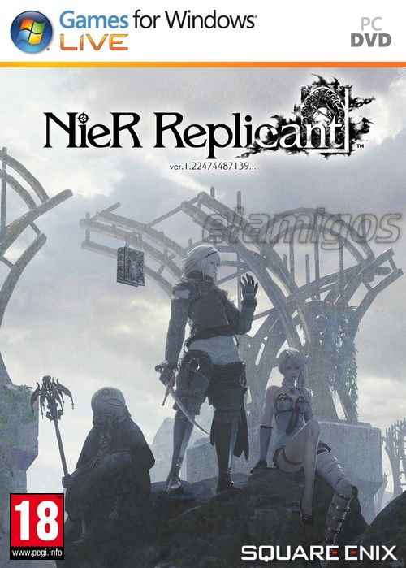

NieR Replicant ver 1 22474487139 18.2 GB
Género: Acción, Hack and Slash
La precuela mejorada de NieR:Automata. Un bondadoso joven parte en
compañía de Grimoire Weiss, un extraño libro parlante, en busca de los Versos
sellados para salvar a su hermana Yonah, enferma de necrosis rúnica.